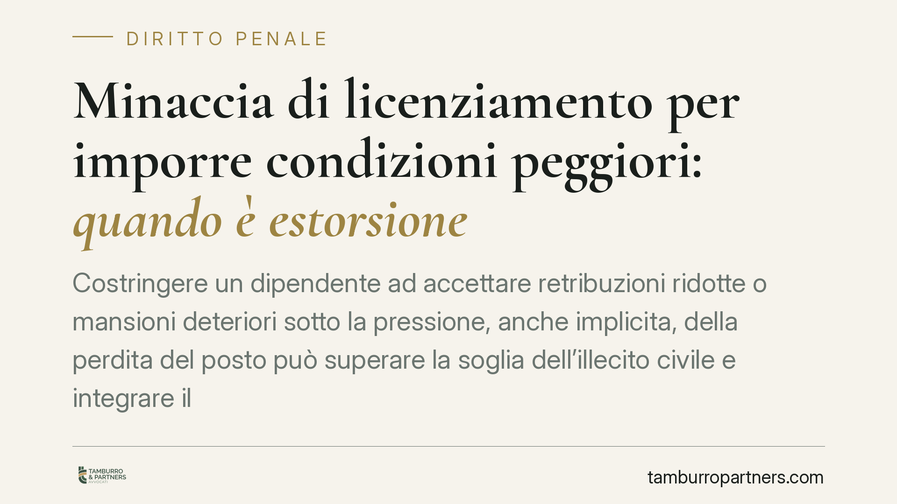

Minaccia di licenziamento per imporre condizioni peggiori: quando è estorsione
Costringere un dipendente ad accettare retribuzioni ridotte o mansioni deteriori sotto la pressione, anche implicita, della perdita del posto può superare la soglia dell'illecito civile e integrare il reato di estorsione. Il tema tocca il confine tra legittimo esercizio del potere datoriale e coazione penalmente rilevante, con ricadute su contenziosi giuslavoristici e profili di responsabilità penale individuale.

Il fatto e la questione
La domanda è ricorrente nei contenziosi di lavoro: il datore che prospetta il licenziamento per ottenere l'accettazione di condizioni contrattuali peggiorative commette estorsione? Un recente orientamento della giurisprudenza penale di legittimità torna sul punto, affrontando il caso di pressioni — anche solo velate — finalizzate a imporre al lavoratore un trattamento deteriore.
Il nodo non è nuovo. La Cassazione penale si è occupata più volte della cosiddetta estorsione "contrattuale", ossia della coazione esercitata per piegare la volontà della controparte a un accordo svantaggioso. Trattandosi di pronuncia recentissima, il riferimento va qui assunto come indicazione di tendenza: il quadro di principio, tuttavia, poggia su un orientamento consolidato.
Inquadramento normativo
L'art. 629 del codice penale punisce chi, mediante violenza o minaccia, costringe taluno a fare o a omettere qualcosa, procurando a sé o ad altri un ingiusto profitto con altrui danno. Gli elementi costitutivi sono quattro: la minaccia (o la violenza), la costrizione della vittima, l'ingiusto profitto e il danno patrimoniale altrui.
Il punto delicato riguarda la natura della minaccia. Secondo un indirizzo consolidato della Suprema Corte, integra la minaccia penalmente rilevante anche la prospettazione di un male giusto perseguito per un fine ingiusto. In altri termini: il licenziamento, in sé, è uno strumento lecito di cui il datore dispone. Ma se la sua evocazione serve a conseguire un vantaggio non dovuto — la rinuncia a diritti, l'accettazione di una paga inferiore, il demansionamento — il mezzo lecito si piega a uno scopo illecito e la condotta può assumere rilievo penale.
Il discrimine, in sostanza, è l'ingiustizia del profitto. Esercitare un potere riconosciuto dall'ordinamento (recesso, modifica organizzativa nei limiti di legge) non è estorsione; usarlo come leva di coazione per ottenere ciò che non spetterebbe lo diventa.
Implicazioni pratiche
Per il lavoratore, questo significa che un consenso estorto sotto minaccia di licenziamento può essere contestato non solo sul piano civilistico — nullità o annullabilità dell'accordo per vizio della volontà — ma anche aprire un fronte penale, con costituzione di parte civile nel relativo processo.
Per il datore di lavoro, l'avvertimento è netto: la gestione dei rapporti non può trasformare la legittima prerogativa di recesso in uno strumento di pressione per imporre sacrifici non concordati o non dovuti. Anche una minaccia implicita o ambientale può essere valorizzata dal giudice.
Una precisazione sul danno. Nel processo penale, la responsabilità va accertata secondo lo standard dell'oltre ogni ragionevole dubbio. La quantificazione del danno chiesto dalla parte civile segue invece la logica civilistica: il giudice, nel liquidare il risarcimento, può ricorrere al criterio del "più probabile che non". Si tratta di due piani distinti: il primo riguarda l'affermazione del reato, il secondo la misura del ristoro riconosciuto al danneggiato costituito.
Cosa fare in concreto
Per i lavoratori:
- Documentare per iscritto ogni richiesta di modifica peggiorativa e il contesto in cui è stata avanzata (email, messaggi, testimoni).
- Non firmare accordi sotto pressione immediata: è opportuno sospendere la decisione e verificare la libertà effettiva del consenso.
- Rivolgersi tempestivamente a un legale per valutare sia l'impugnazione civile dell'atto sia l'eventuale rilievo penale.
Per i datori di lavoro:
- Distinguere con rigore tra riorganizzazione legittima e pressione finalizzata a un vantaggio non dovuto.
- Formalizzare le modifiche contrattuali con trasparenza, evitando che il recesso sia evocato come leva negoziale.
- Verificare preventivamente la conformità di ogni accordo modificativo rispetto ai diritti indisponibili del lavoratore.
Conclusione
Il messaggio è coerente con un orientamento ormai stabile: il confine tra esercizio legittimo del potere datoriale e coazione penalmente rilevante corre sull'ingiustizia del profitto perseguito. Il male prospettato, pur lecito in astratto, diventa illecito quando è strumentale a un vantaggio non dovuto.
Disclaimer
Contributo informativo a cura di Tamburro & Partners Avvocati — Avv. Giuseppe Tamburro. Non costituisce parere legale.
Ogni condominio ha una storia a sé.
Se gestisci un'amministrazione e vuoi un confronto su una specifica questione condominiale, scrivi allo studio. Ti rispondiamo entro un giorno lavorativo.